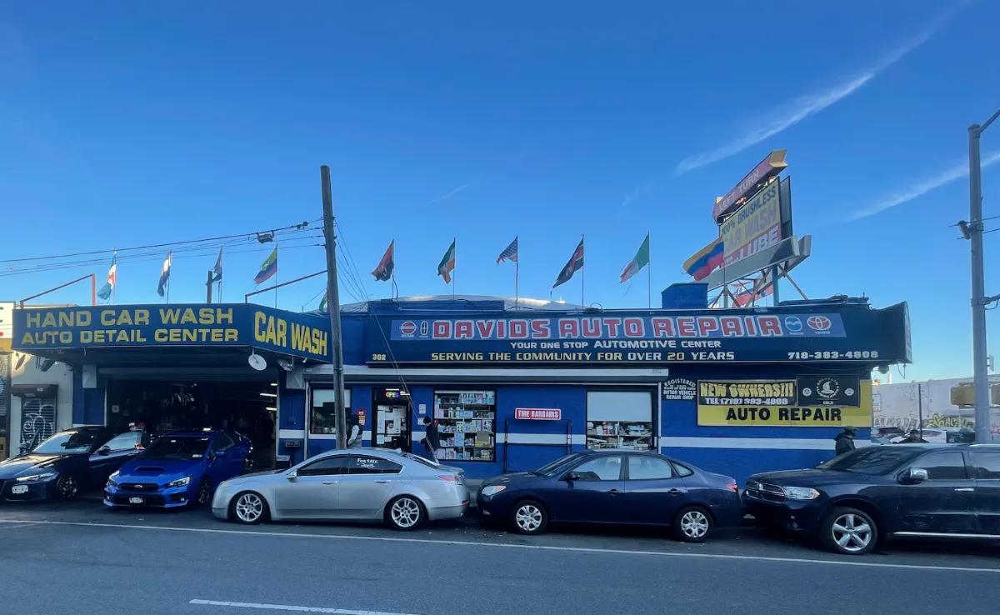
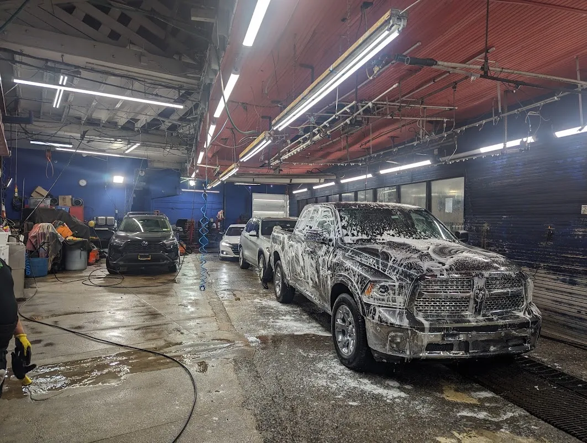

David’s Auto Repair
Auto repair shop in Brooklyn.
302 McGuinness Blvd, Brooklyn, NY 11222

4.4 / 5
485 Google reviews
Customer words
“I have nothing but great things to say about this place. The staff is always friendly and welcoming. The prices are reasonable, the mechanics are very knowledgeable and they do great work. I was first introduced to them”
Cryssie Rey (Crys)
Read the reviewsMcGuinness Boulevard
David’s Auto Repair is at 302 McGuinness Boulevard in Brooklyn. Describe what is happening with your vehicle and ask how to arrange an assessment before making the trip.
David's Auto Repair is listed at 302 McGuinness Blvd, Brooklyn, NY 11222. Explore the actual photographs and customer experiences before getting in touch.
Discuss your enquiry
302 McGuinness Blvd, Brooklyn, NY 11222
Get directionsPlan your visit
Prepare a clear enquiry for David's Auto Repair. Confirm the available service, price and timing directly.
302 McGuinness Blvd, Brooklyn, NY 11222